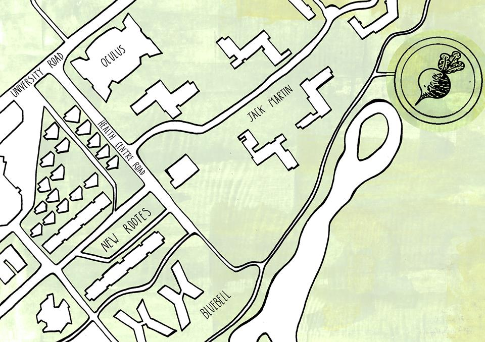

About Us
Planted in 2011, Warwick Allotment Society took over the running of a growing space on campus which was established in 2009. A grant in summer 2012 from NUS Student Eats has helped us blossom and we now have numerous raised beds, a 10 x 4.5m polytunnel of wonder, and two P-E-A-utiful cold frames.
In our weekly sessions, we do everything from digging drainage ditches to planting potatoes or even fashioning scarecrows out of recycled clothing. Of course, we allotmenteers love to cook something from the vegetables, fruits, and herbs we harvest - so come prepared to exchange delicious recipes! We also have skills shares, talks and social events throughout the year, including our semi offical bonfires! (Just remember you didn't hear that from us! ;) ).
The Allotment Society loves to see new shoots and help them grow so if you love vegetables and want to get involved in growing them, swing by one of our sessions or join our society on Facebook.
Most society activity has been paused for now but we would usually meet at 2pm on Wednesdays both during term time and University vacation. Hopefully things will get back to normal soon, but until then, stay safe :)
